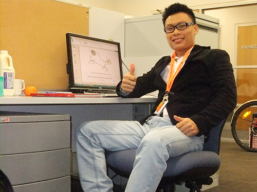

Phan Thế Hoàng - gương mặt tài năng

Lần cập nhật cuối lúc Thứ sáu, 13 Tháng 9 2013 15:21 Viết bởi Administrator Thứ tư, 04 Tháng 9 2013 06:53
Đoạt “Cúp vàng thủ khoa” khi tốt nghiệp Đại học Bách khoa TP.Hồ Chí Minh, Phan Thế Hoàng - gương mặt tài năng quê xã Tam Mỹ Tây (Núi Thành), đã được đặc cách học thẳng lên tiến sĩ. Và chàng trai này đã được một trường đại học danh tiếng ở Úc cấp học bổng toàn phần để đi du học.
Phan Thế Hoàng tại phòng nghiên cứu của mình tại Đại học Wollonggong - Úc.
(Ảnh do nhân vật cung cấp)
Chàng sinh viên lãng tử
Học chuyên ngành Hàng không, tốt nghiệp thủ khoa Khoa kỹ thuật giao thông, đang theo chương trình đào tạo tiến sĩ ngành Nghiên cứu cơ điện tử và cơ học vật liệu tại Úc, Phan Thế Hoàng khiến nhiều người ngỡ ngàng và ngưỡng mộ. Con đường theo đuổi nghiên cứu khoa học cũng tự nhiên như khi Hoàng chọn Đại học Bách khoa TP. Hồ Chí Minh 5 năm về trước. “Cấp 3 mình học hành bình thường, thích môn Toán và Vật lý, cũng từng đoạt giải Ba cấp tỉnh môn Toán. Nhưng ngày đó mình cũng không hề biết nghiên cứu khoa học là gì, chỉ ước mơ vào đại học rồi ra trường kiếm việc, phụ ba mẹ thôi” - Hoàng chia sẻ. Kỳ thi đại học năm đó Hoàng đạt 24,5 điểm. Tự nhận mình chưa xuất sắc, bước vào giảng đường đại học, Phan Thế Hoàng học ngày học đêm. “Mình được chọn vào lớp Đào tạo kỹ sư chất lượng cao Việt - Pháp. Học kỳ đầu áp lực vì các anh chị đi trước nói Bách khoa học khó, dù cày đêm ngày kết quả vẫn thấp. Sau đó học nhóm với các bạn, thời gian học ít nhưng hiệu quả nhiều. Ngoài ra còn tích thêm được khối kinh nghiệm khi tham gia các câu lạc bộ tiếng Anh, tiếng Pháp, văn nghệ” - Hoàng cho biết.
Chàng sinh viên Quảng Nam này bật mí, trong suốt 5 năm đại học, Hoàng luôn là Chủ nhiệm Câu lạc bộ văn nghệ và ghi ta của ký túc xá Đại học Bách khoa, kiêm chức Phó Chủ nhiệm Câu lạc bộ tiếng Anh của Nhà văn hóa Thanh niên TP.Hồ Chí Minh. Cho rằng không cứ phải “mọt sách” mới học giỏi, nên bất kỳ hoạt động xã hội nào cũng có sự tham gia của chàng sinh viên lãng tử Phan Thế Hoàng với cây đàn ghi ta. Những hoạt động xã hội đã cho Hoàng rất nhiều kỹ năng mềm, mất hẳn tính nhút nhát và tự ti của một học trò tỉnh lẻ.
Cuối năm 2012, Phan Thế Hoàng nhận Cúp vàng thủ khoa của Đại học Bách khoa TP. Hồ Chí Minh. Đây là giải thưởng vô cùng danh giá khi phải hội tụ đủ các điều kiện như điểm cao nhất khoa, ngoại ngữ tiếng Pháp Delf B1, tiếng Anh Toeic 600, không được rớt môn nào trong 5 năm và đủ 15 ngày công tác xã hội của trường. Đặc biệt, người nhận Cúp vàng được đặc cách học thẳng lên tiến sĩ, không cần thông qua học vị thạc sĩ.
Hành trình du học
Sau khi ra trường, Hoàng nhận được rất nhiều “săn đón” từ các công ty lớn như Nestle, Vietjet Air... “Khi ấy mình phân vân nhiều lắm. Nếu đi làm sẽ không tận dụng được Cúp vàng thủ khoa đã đạt được. Thế là mình đánh liều “săn” học bổng du học. Bởi, quá trình “săn” học bổng sẽ mất từ vài tháng đến 1 năm, nếu không được thì coi như mình bỏ phí thời gian và cơ hội” - Hoàng chia sẻ.
Không phụ lòng người đặt niềm tin vào mình, hơn 3 tháng Hoàng tự tìm giáo sư, viết thư bày tỏ nguyện vọng và tìm học bổng toàn phần. “Sau khi nhận được đồng ý của trường University of Wollonggong, bang New South Wales, Úc, ngành Mechanical Materials Mechatronics, mình phải bổ sung bằng IELTS chuẩn tiếng Anh quốc tế. Theo quy định của Úc, học thạc sĩ phải có IELTS 6.0; học vị tiến sĩ phải là 6.5. Trong khi đó mình lại đang chuyên tiếng Pháp… Vậy là trong vòng 3 tháng, mình phải bù đầu luyện tiếng Anh, may mắn là kiểm tra vừa đạt mức trường yêu cầu” - Hoàng nói.
Ngay cả khi làm đề tài xin học bổng PhD, Phan Thế Hoàng cũng đã nghiên cứu rất sâu về chủ đề có thể ứng dụng trong nhiều lĩnh vực. Đề tài “Khảo sát ứng xử mô hình 3D cho bề mặt thép hoạt động ở vận tốc lớn trong môi trường nhiệt độ cao, áp suất cao” của Hoàng nhận được sự tán đồng của rất nhiều người. Điều này càng thôi thúc đam mê nghiên cứu khoa học của Hoàng. Hoàng kể rằng, khi bắt đầu làm luận văn bảo vệ cuối khóa, Hoàng phát hiện ra mình thực sự đam mê nghiên cứu khoa học. “Mình thích nghiên cứu khoa học là từ thầy, PGS-TS. Nguyễn Thiện Tống, người sáng lập ngành Hàng không ở trường Đại học Bách khoa TP.Hồ Chí Minh, cũng là người hướng dẫn luận văn tốt nghiệp cho mình. Mình học thầy từ thầy phong cách làm việc của một người nghiên cứu, cách suy nghĩ, làm việc đúng giờ.... Thầy đồng thời cũng là người khuyên mình nếu có cơ hội thì nên học tiếp. Thầy trước đây cũng là du học sinh bên Úc, khoảng những năm 1965. Việc đi du học và nghiên cứu cho mình cơ hội tiếp xúc với nhiều nền văn hóa khác, học hỏi được nhiều, suy nghĩ cũng lớn hơn”. Tháng 7 vừa qua, Hoàng đã đặt chân đến nước Úc để thực hiện đam mê của mình.
Khi biết mình được nhận Tặng thưởng Quỹ Ươm mầm tài năng đất Quảng, Hoàng nói đây là động lực tinh thần từ quê nhà, tiếp bước cho niềm đam mê củitnbk.edu.vnhuyện về Việt Nam hay sẽ ở lại Úc và tiếp tục học lên, với Hoàng bây giờ còn quá xa xôi, nhưng như Hoàng chia sẻ, nếu muốn cống hiến cho quê hương, đất nước, thì dù ở đâu, cũng có thể góp sức mình…
SONG ANH (Theo baoquangnam.com.vn)
- 06/02/2014 22:18 - Kỳ tích Võ Quang Hưng
- 25/01/2014 22:14 - Bí thư Tỉnh ủy Nguyễn Đức Hải chúc mừng trường THP…
- 13/09/2013 14:23 - Khai mạc giải Việt dã truyền thống Báo Quảng Nam m…
- 09/09/2013 08:41 - Ngành Giáo dục Quảng Nam tưng bừng khai giảng năm …
- 05/09/2013 22:12 - Dự lễ khai giảng năm học mới, Bí thư Tỉnh ủy Nguyễ…
- itnbk.edu.vn
- 28/08/2013 09:52 - Những thầy thuốc tương lai
- 27/08/2013 13:27 - Chinh phục đam mê
- 26/08/2013 15:10 - 45 mô hình, sản phẩm đạt giải Cuộc thi sáng tạo th…
- 23/08/2013 14:23 - Nữ sinh xứ Quảng vinh danh tại ĐH Harvard
- 23/08/2013 09:40 - Chị em Hiền - Hòa